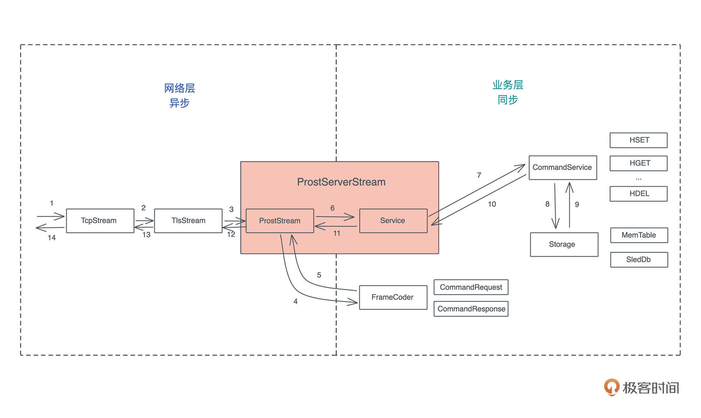
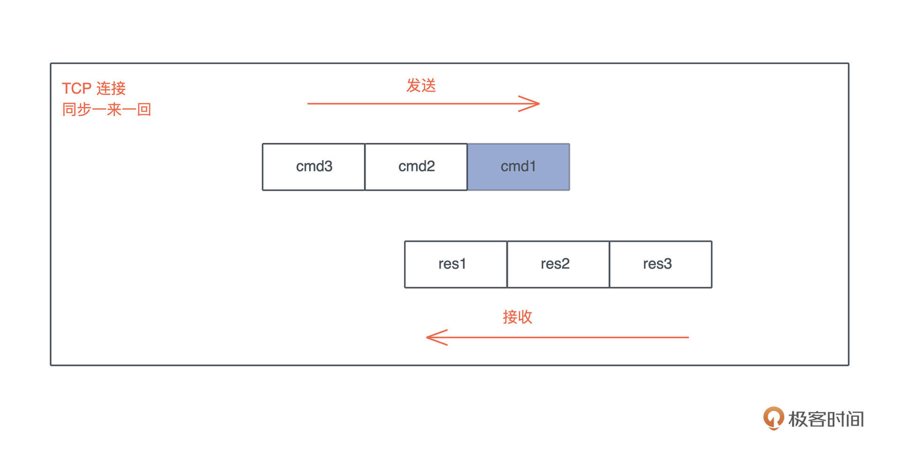
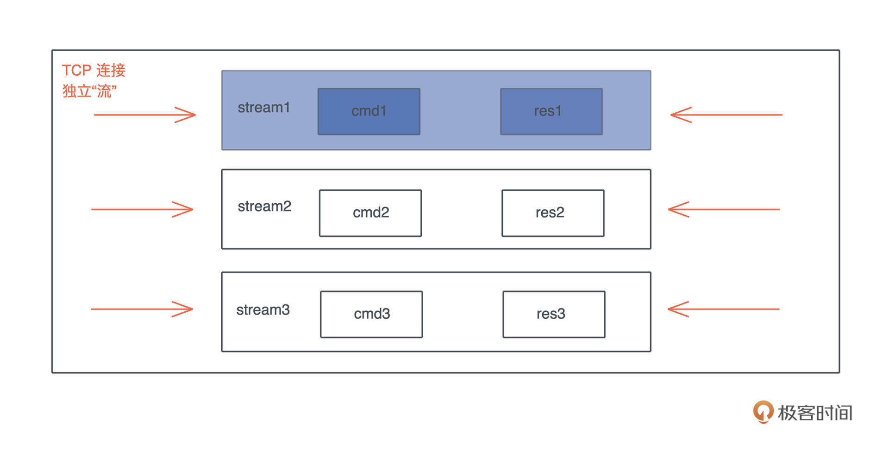
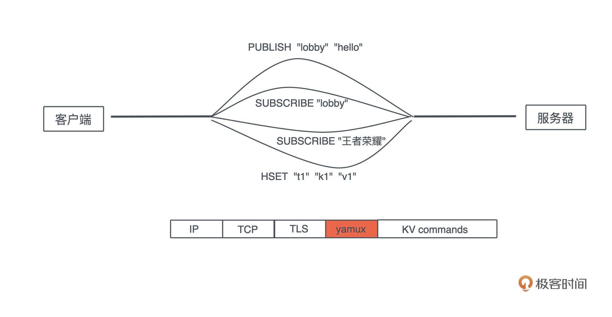
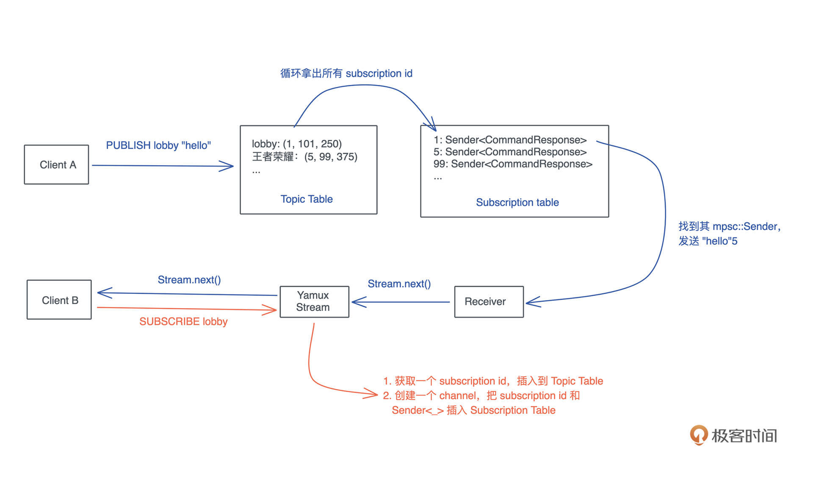

- 00 开篇词 让Rust成为你的下一门主力语言.md.html
- 01 内存：值放堆上还是放栈上，这是一个问题.md.html
- 02 串讲：编程开发中，那些你需要掌握的基本概念.md.html
- 03 初窥门径：从你的第一个Rust程序开始！.md.html
- 04 get hands dirty：来写个实用的CLI小工具.md.html
- 05 get hands dirty：做一个图片服务器有多难？.md.html
- 06 get hands dirty：SQL查询工具怎么一鱼多吃？.md.html
- 07 所有权：值的生杀大权到底在谁手上？.md.html
- 08 所有权：值的借用是如何工作的？.md.html
- 09 所有权：一个值可以有多个所有者么？.md.html
- 10 生命周期：你创建的值究竟能活多久？.md.html
- 11 内存管理：从创建到消亡，值都经历了什么？.md.html
- 12 类型系统：Rust的类型系统有什么特点？.md.html
- 13 类型系统：如何使用trait来定义接口？.md.html
- 14 类型系统：有哪些必须掌握的trait？.md.html
- 15 数据结构：这些浓眉大眼的结构竟然都是智能指针？.md.html
- 16 数据结构：Vec_T_、&[T]、Box_[T]_ ，你真的了解集合容器么？.md.html
- 17 数据结构：软件系统核心部件哈希表，内存如何布局？.md.html
- 18 错误处理：为什么Rust的错误处理与众不同？.md.html
- 19 闭包：FnOnce、FnMut和Fn，为什么有这么多类型？.md.html
- 20 4 Steps ：如何更好地阅读Rust源码？.md.html
- 21 阶段实操（1）：构建一个简单的KV server-基本流程.md.html
- 22 阶段实操（2）：构建一个简单的KV server-基本流程.md.html
- 23 类型系统：如何在实战中使用泛型编程？.md.html
- 24 类型系统：如何在实战中使用trait object？.md.html
- 25 类型系统：如何围绕trait来设计和架构系统？.md.html
- 26 阶段实操（3）：构建一个简单的KV server-高级trait技巧.md.html
- 27 生态系统：有哪些常有的Rust库可以为我所用？.md.html
- 28 网络开发（上）：如何使用Rust处理网络请求？.md.html
- 29 网络开发（下）：如何使用Rust处理网络请求？.md.html
- 30 Unsafe Rust：如何用C++的方式打开Rust？.md.html
- 31 FFI：Rust如何和你的语言架起沟通桥梁？.md.html
- 32 实操项目：使用PyO3开发Python3模块.md.html
- 33 并发处理（上）：从atomics到Channel，Rust都提供了什么工具？.md.html
- 34 并发处理（下）：从atomics到Channel，Rust都提供了什么工具？.md.html
- 35 实操项目：如何实现一个基本的MPSC channel？.md.html
- 36 阶段实操（4）：构建一个简单的KV server-网络处理.md.html
- 37 阶段实操（5）：构建一个简单的KV server-网络安全.md.html
- 38 异步处理：Future是什么？它和async_await是什么关系？.md.html
- 39 异步处理：async_await内部是怎么实现的？.md.html
- 40 异步处理：如何处理异步IO？.md.html
- 41 阶段实操（6）：构建一个简单的KV server-异步处理.md.html
- 42 阶段实操（7）：构建一个简单的KV server-如何做大的重构？.md.html
- 43 生产环境：真实世界下的一个Rust项目包含哪些要素？.md.html
- 44 数据处理：应用程序和数据如何打交道？.md.html
- 45 阶段实操（8）：构建一个简单的KV server-配置_测试_监控_CI_CD.md.html
- 46 软件架构：如何用Rust架构复杂系统？.md.html
- 加餐 Rust2021版次问世了！.md.html
- 加餐 代码即数据：为什么我们需要宏编程能力？.md.html
- 加餐 宏编程（上）：用最“笨”的方式撰写宏.md.html
- 加餐 宏编程（下）：用 syn_quote 优雅地构建宏.md.html
- 加餐 愚昧之巅：你的Rust学习常见问题汇总.md.html
- 加餐 期中测试：参考实现讲解.md.html
- 加餐 期中测试：来写一个简单的grep命令行.md.html
- 加餐 这个专栏你可以怎么学，以及Rust是否值得学？.md.html
- 大咖助场 开悟之坡（上）：Rust的现状、机遇与挑战.md.html
- 大咖助场 开悟之坡（下）：Rust的现状、机遇与挑战.md.html
- 特别策划 学习锦囊（一）：听听课代表们怎么说.md.html
- 特别策划 学习锦囊（三）：听听课代表们怎么说.md.html
- 特别策划 学习锦囊（二）：听听课代表们怎么说.md.html
- 用户故事 绝望之谷：改变从学习开始.md.html
- 用户故事 语言不仅是工具，还是思维方式.md.html
- 结束语 永续之原：Rust学习，如何持续精进？.md.html
- 捐赠
42 阶段实操（7）：构建一个简单的KV server-如何做大的重构？
你好，我是陈天。
在软件开发的过程中，一开始设计得再精良，也扛不住无缘无故的需求变更。所以我们要妥善做架构设计，让它能满足潜在的需求；但也不能过度设计，让它去适应一些虚无缥缈的需求。好的开发者，要能够把握这个度。
到目前为止，我们的 KV server 已经羽翼丰满，作为一个基本的 KV 存储够用了。
这时候，产品经理突然抽风，想让你在这个 Server 上加上类似 Redis 的 Pub/Sub 支持。你说：别闹，这根本就是两个产品。产品经理回应： Redis 也支持 Pub/Sub。你怼回去：那干脆用 Redis 的 Pub/Sub 得了。产品经理听了哈哈一笑：行，用 Redis 挺好，我们还能把你的工钱省下来呢。天都聊到这份上了，你只好妥协：那啥，姐，我做，我做还不行么？
这虽是个虚构的故事，但类似的大需求变更在我们开发者的日常工作中相当常见。我们就以这个具备不小难度的挑战，来看看，如何对一个已经成形的系统进行大的重构。
现有架构分析
先简单回顾一下 Redis 对 Pub/Sub 的支持：客户端可以随时发起 SUBSCRIBE、PUBLISH 和 UNSUBSCRIBE。如果客户端 A 和 B SUBSCRIBE 了一个叫 lobby 的主题，客户端 C 往 lobby 里发了 “hello”，A 和 B 都将立即收到这个信息。
使用起来是这个样子的：
A: SUBSCRIBE "lobby"
A: SUBSCRIBE "王者荣耀"
B: SUBSCRIBE "lobby"
C: PUBLISH "lobby" "hello"
// A/B 都收到 "hello"
B: UNSUBSCRIBE "lobby"
B: SUBSCRIBE "王者荣耀"
D: PUBLISH "lobby" "goodbye"
// 只有 A 收到 "goodbye"
C: PUBLISH "王者荣耀" "good game"
// A/B 都收到 "good game"
带着这个需求，我们重新审视目前的架构：

要支持 Pub/Sub，现有架构有两个很大的问题。
首先，CommandService 是一个同步的处理，来一个命令，立刻就能计算出一个值返回。但现在来一个 SUBSCRIBE 命令，它期待的不是一个值，而是未来可能产生的若干个值。我们讲过 Stream 代表未来可能产生的一系列值，所以这里需要返回一个异步的 Stream。
因此，我们要么需要牺牲 CommandService 这个 trait 来适应新的需求，要么构建一个新的、和 CommandService trait 并列的 trait，来处理和 Pub/Sub 有关的命令。
其次，如果直接在 TCP/TLS 之上构建 Pub/Sub 的支持，我们需要在 Request 和 Response 之间建立“流”的概念，为什么呢？
之前我们的协议运行模式是同步的，一来一回：

但是，如果继续采用这样的方式，就会有应用层的 head of line blocking（队头阻塞）问题，一个 SUBSCRIBE 命令，因为其返回结果不知道什么时候才结束，会阻塞后续的所有命令。所以，我们需要在一个连接里，划分出很多彼此独立的“流”，让它们的收发不受影响：

这种流式处理的典型协议是使用了多路复用（multiplex）的 HTTP/2。所以，一种方案是我们可以把 KV server 构建在使用 HTTP/2 的 gRPC 上。不过，HTTP 是个太过庞杂的协议，对于 KV server 这种性能非常重要的服务来说，不必要的额外开销太多，所以它不太适合。
另一种方式是使用 Yamux 协议，之前介绍过，它是一个简单的、和 HTTP/2 内部多路复用机制非常类似的协议。如果使用它，整个协议的交互看上去是这个样子的：

Yamux 适合不希望引入 HTTP 的繁文缛节（大量的头信息），在 TCP 层做多路复用的场景，今天就用它来支持我们所要实现的 Pub/Sub。
使用 yamux 做多路复用
Rust 下有 rust-yamux 这个库，来支持 yamux。除此之外，我们还需要 tokio-util，它提供了 tokio 下的 trait 和 futures 下的 trait 的兼容能力。在 Cargo.toml 中引入它们：
[dependencies]
...
tokio-util = { version = "0.6", features = ["compat"]} # tokio 和 futures 的兼容性库
...
yamux = "0.9" # yamux 多路复用支持
...
然后创建 src/network/multiplex.rs（记得在 mod.rs 里引用），添入如下代码：
use futures::{future, Future, TryStreamExt};
use std::marker::PhantomData;
use tokio::io::{AsyncRead, AsyncWrite};
use tokio_util::compat::{Compat, FuturesAsyncReadCompatExt, TokioAsyncReadCompatExt};
use yamux::{Config, Connection, ConnectionError, Control, Mode, WindowUpdateMode};
/// Yamux 控制结构
pub struct YamuxCtrl<S> {
/// yamux control，用于创建新的 stream
ctrl: Control,
_conn: PhantomData<S>,
}
impl<S> YamuxCtrl<S>
where
S: AsyncRead + AsyncWrite + Unpin + Send + 'static,
{
/// 创建 yamux 客户端
pub fn new_client(stream: S, config: Option<Config>) -> Self {
Self::new(stream, config, true, |_stream| future::ready(Ok(())))
}
/// 创建 yamux 服务端，服务端我们需要具体处理 stream
pub fn new_server<F, Fut>(stream: S, config: Option<Config>, f: F) -> Self
where
F: FnMut(yamux::Stream) -> Fut,
F: Send + 'static,
Fut: Future<Output = Result<(), ConnectionError>> + Send + 'static,
{
Self::new(stream, config, false, f)
}
// 创建 YamuxCtrl
fn new<F, Fut>(stream: S, config: Option<Config>, is_client: bool, f: F) -> Self
where
F: FnMut(yamux::Stream) -> Fut,
F: Send + 'static,
Fut: Future<Output = Result<(), ConnectionError>> + Send + 'static,
{
let mode = if is_client {
Mode::Client
} else {
Mode::Server
};
// 创建 config
let mut config = config.unwrap_or_default();
config.set_window_update_mode(WindowUpdateMode::OnRead);
// 创建 config，yamux::Stream 使用的是 futures 的 trait 所以需要 compat() 到 tokio 的 trait
let conn = Connection::new(stream.compat(), config, mode);
// 创建 yamux ctrl
let ctrl = conn.control();
// pull 所有 stream 下的数据
tokio::spawn(yamux::into_stream(conn).try_for_each_concurrent(None, f));
Self {
ctrl,
_conn: PhantomData::default(),
}
}
/// 打开一个新的 stream
pub async fn open_stream(&mut self) -> Result<Compat<yamux::Stream>, ConnectionError> {
let stream = self.ctrl.open_stream().await?;
Ok(stream.compat())
}
}
这段代码提供了 Yamux 的基本处理。如果有些地方你看不明白，比如 WindowUpdateMode，yamux::into_stream() 等，很正常，需要看看 yamux crate 的文档和例子。
这里有一个复杂的接口，我们稍微解释一下：
pub fn new_server<F, Fut>(stream: S, config: Option<Config>, f: F) -> Self
where
F: FnMut(yamux::Stream) -> Fut,
F: Send + 'static,
Fut: Future<Output = Result<(), ConnectionError>> + Send + 'static,
{
Self::new(stream, config, false, f)
}
它的意思是，参数 f 是一个 FnMut 闭包，接受一个 yamux::Stream 参数，返回 Future。这样的结构我们之前见过，之所以接口这么复杂，是因为 Rust 还没有把 async 闭包稳定下来。所以，如果要想写一个 async || {}，这是最佳的方式。
还是写一段测试测一下（篇幅关系，完整的代码就不放了，你可以到 GitHub repo 下对照 diff_yamux 看修改）：
#[tokio::test]
async fn yamux_ctrl_client_server_should_work() -> Result<()> {
// 创建使用了 TLS 的 yamux server
let acceptor = tls_acceptor(false)?;
let addr = start_yamux_server("127.0.0.1:0", acceptor, MemTable::new()).await?;
let connector = tls_connector(false)?;
let stream = TcpStream::connect(addr).await?;
let stream = connector.connect(stream).await?;
// 创建使用了 TLS 的 yamux client
let mut ctrl = YamuxCtrl::new_client(stream, None);
// 从 client ctrl 中打开一个新的 yamux stream
let stream = ctrl.open_stream().await?;
// 封装成 ProstClientStream
let mut client = ProstClientStream::new(stream);
let cmd = CommandRequest::new_hset("t1", "k1", "v1".into());
client.execute(cmd).await.unwrap();
let cmd = CommandRequest::new_hget("t1", "k1");
let res = client.execute(cmd).await.unwrap();
assert_res_ok(res, &["v1".into()], &[]);
Ok(())
}
可以看到，经过简单的封装，yamux 就很自然地融入到我们现有的架构中。因为 open_stream() 得到的是符合 tokio AsyncRead/AsyncWrite 的 stream，所以它可以直接配合 ProstClientStream 使用。也就是说，我们网络层又改动了一下，但后面逻辑依然不用变。
运行 cargo test ，所有测试都能通过。
支持 pub/sub
好，现在网络层已经支持了 yamux，为多路复用打下了基础。我们来看 pub/sub 具体怎么实现。
首先修改 abi.proto，加入新的几个命令：
// 来自客户端的命令请求
message CommandRequest {
oneof request_data {
...
Subscribe subscribe = 10;
Unsubscribe unsubscribe = 11;
Publish publish = 12;
}
}
// subscribe 到某个主题，任何发布到这个主题的数据都会被收到
// 成功后，第一个返回的 CommandResponse，我们返回一个唯一的 subscription id
message Subscribe { string topic = 1; }
// 取消对某个主题的订阅
message Unsubscribe {
string topic = 1;
uint32 id = 2;
}
// 发布数据到某个主题
message Publish {
string topic = 1;
repeated Value data = 2;
}
命令的响应我们不用改变。当客户端 Subscribe 时，返回的 stream 里的第一个值包含订阅 ID，这是一个全局唯一的 ID，这样，客户端后续可以用 Unsubscribe 取消。
Pub/Sub 如何设计？
那么，Pub/Sub 该如何实现呢？
我们可以用两张表：一张 Topic Table，存放主题和对应的订阅列表；一张 Subscription Table，存放订阅 ID 和 channel 的发送端。
当 SUBSCRIBE 时，我们获取一个订阅 ID，插入到 Topic Table，然后再创建一个 MPSC channel，把 channel 的发送端和订阅 ID 存入 subscription table。
这样，当有人 PUBLISH 时，可以从 Topic table 中找到对应的订阅 ID 的列表，然后循环从 subscription table 中找到对应的 Sender，往里面写入数据。此时，channel 的 Receiver 端会得到数据，这个数据会被 yamux stream poll 到，然后发给客户端。
整个流程如下图所示：

有了这个基本设计，我们可以着手接口和数据结构的构建了：
/// 下一个 subscription id
static NEXT_ID: AtomicU32 = AtomicU32::new(1);
/// 获取下一个 subscription id
fn get_next_subscription_id() -> u32 {
NEXT_ID.fetch_add(1, Ordering::Relaxed)
}
pub trait Topic: Send + Sync + 'static {
/// 订阅某个主题
fn subscribe(self, name: String) -> mpsc::Receiver<Arc<CommandResponse>>;
/// 取消对主题的订阅
fn unsubscribe(self, name: String, id: u32);
/// 往主题里发布一个数据
fn publish(self, name: String, value: Arc<CommandResponse>);
}
/// 用于主题发布和订阅的数据结构
#[derive(Default)]
pub struct Broadcaster {
/// 所有的主题列表
topics: DashMap<String, DashSet<u32>>,
/// 所有的订阅列表
subscriptions: DashMap<u32, mpsc::Sender<Arc<CommandResponse>>>,
}
这里，subscription_id 我们用一个 AtomicU32 来表述。
对于这样一个全局唯一的 ID，很多同学喜欢用 UUID4 来表述。注意使用 UUID 的话，存储时一定不要存它的字符串表现形式，太浪费内存且每次都有额外的堆分配，应该用它 u128 的表现形式。
不过即便 u128，也比 u32 浪费很多空间。假设某个主题 M 下有一万个订阅，要往这个 M 里发送一条消息，就意味着整个 DashSet
另外，我们把 CommandResponse 封装进了一个 Arc。如果一条消息要发送给一万个客户端，那么我们不希望这条消息被复制后，再被发送，而是直接发送同一份数据。
这里对 Pub/Sub 的接口，构建了一个 Topic trait。虽然目前我们只有 Broadcaster 会实现 Topic trait，但未来也许会换不同的实现方式，所以，抽象出 Topic trait 很有意义。
Pub/Sub 的实现
好，我们来写代码。创建 src/service/topic.rs（记得在 mod.rs 里引用），并添入：
use dashmap::{DashMap, DashSet};
use std::sync::{
atomic::{AtomicU32, Ordering},
Arc,
};
use tokio::sync::mpsc;
use tracing::{debug, info, warn};
use crate::{CommandResponse, Value};
/// topic 里最大存放的数据
const BROADCAST_CAPACITY: usize = 128;
/// 下一个 subscription id
static NEXT_ID: AtomicU32 = AtomicU32::new(1);
/// 获取下一个 subscription id
fn get_next_subscription_id() -> u32 {
NEXT_ID.fetch_add(1, Ordering::Relaxed)
}
pub trait Topic: Send + Sync + 'static {
/// 订阅某个主题
fn subscribe(self, name: String) -> mpsc::Receiver<Arc<CommandResponse>>;
/// 取消对主题的订阅
fn unsubscribe(self, name: String, id: u32);
/// 往主题里发布一个数据
fn publish(self, name: String, value: Arc<CommandResponse>);
}
/// 用于主题发布和订阅的数据结构
#[derive(Default)]
pub struct Broadcaster {
/// 所有的主题列表
topics: DashMap<String, DashSet<u32>>,
/// 所有的订阅列表
subscriptions: DashMap<u32, mpsc::Sender<Arc<CommandResponse>>>,
}
impl Topic for Arc<Broadcaster> {
fn subscribe(self, name: String) -> mpsc::Receiver<Arc<CommandResponse>> {
let id = {
let entry = self.topics.entry(name).or_default();
let id = get_next_subscription_id();
entry.value().insert(id);
id
};
// 生成一个 mpsc channel
let (tx, rx) = mpsc::channel(BROADCAST_CAPACITY);
let v: Value = (id as i64).into();
// 立刻发送 subscription id 到 rx
let tx1 = tx.clone();
tokio::spawn(async move {
if let Err(e) = tx1.send(Arc::new(v.into())).await {
// TODO: 这个很小概率发生，但目前我们没有善后
warn!("Failed to send subscription id: {}. Error: {:?}", id, e);
}
});
// 把 tx 存入 subscription table
self.subscriptions.insert(id, tx);
debug!("Subscription {} is added", id);
// 返回 rx 给网络处理的上下文
rx
}
fn unsubscribe(self, name: String, id: u32) {
if let Some(v) = self.topics.get_mut(&name) {
// 在 topics 表里找到 topic 的 subscription id，删除
v.remove(&id);
// 如果这个 topic 为空，则也删除 topic
if v.is_empty() {
info!("Topic: {:?} is deleted", &name);
drop(v);
self.topics.remove(&name);
}
}
debug!("Subscription {} is removed!", id);
// 在 subscription 表中同样删除
self.subscriptions.remove(&id);
}
fn publish(self, name: String, value: Arc<CommandResponse>) {
tokio::spawn(async move {
match self.topics.get(&name) {
Some(chan) => {
// 复制整个 topic 下所有的 subscription id
// 这里我们每个 id 是 u32，如果一个 topic 下有 10k 订阅，复制的成本
// 也就是 40k 堆内存（外加一些控制结构），所以效率不算差
// 这也是为什么我们用 NEXT_ID 来控制 subscription id 的生成
let chan = chan.value().clone();
// 循环发送
for id in chan.into_iter() {
if let Some(tx) = self.subscriptions.get(&id) {
if let Err(e) = tx.send(value.clone()).await {
warn!("Publish to {} failed! error: {:?}", id, e);
}
}
}
}
None => {}
}
});
}
}
这段代码就是 Pub/Sub 的核心功能了。你可以对照着上面的设计图和代码中的详细注释去理解。我们来写一个测试确保它正常工作：
#[cfg(test)]
mod tests {
use std::convert::TryInto;
use crate::assert_res_ok;
use super::*;
#[tokio::test]
async fn pub_sub_should_work() {
let b = Arc::new(Broadcaster::default());
let lobby = "lobby".to_string();
// subscribe
let mut stream1 = b.clone().subscribe(lobby.clone());
let mut stream2 = b.clone().subscribe(lobby.clone());
// publish
let v: Value = "hello".into();
b.clone().publish(lobby.clone(), Arc::new(v.clone().into()));
// subscribers 应该能收到 publish 的数据
let id1: i64 = stream1.recv().await.unwrap().as_ref().try_into().unwrap();
let id2: i64 = stream2.recv().await.unwrap().as_ref().try_into().unwrap();
assert!(id1 != id2);
let res1 = stream1.recv().await.unwrap();
let res2 = stream2.recv().await.unwrap();
assert_eq!(res1, res2);
assert_res_ok(&res1, &[v.clone()], &[]);
// 如果 subscriber 取消订阅，则收不到新数据
b.clone().unsubscribe(lobby.clone(), id1 as _);
// publish
let v: Value = "world".into();
b.clone().publish(lobby.clone(), Arc::new(v.clone().into()));
assert!(stream1.recv().await.is_none());
let res2 = stream2.recv().await.unwrap();
assert_res_ok(&res2, &[v.clone()], &[]);
}
}
这个测试需要一系列新的改动，比如 assert_res_ok() 的接口变化了，我们需要在 src/pb/mod.rs 里添加新的 TryFrom 支持等等，详细代码你可以看 repo 里的 diff_topic。
在处理流程中引入 Pub/Sub
好，再来看它和用户传入的 CommandRequest 如何发生关系。我们之前设计了 CommandService trait，它虽然可以处理其它命令，但对 Pub/Sub 相关的几个新命令无法处理，因为接口没有任何和 Topic 有关的参数：
/// 对 Command 的处理的抽象
pub trait CommandService {
/// 处理 Command，返回 Response
fn execute(self, store: &impl Storage) -> CommandResponse;
}
但是如果直接修改这个接口，对已有的代码就非常不友好。所以我们还是对比着创建一个新的 trait：
pub type StreamingResponse = Pin<Box<dyn Stream<Item = Arc<CommandResponse>> + Send>>;
pub trait TopicService {
/// 处理 Command，返回 Response
fn execute<T>(self, chan: impl Topic) -> StreamingResponse;
}
因为 Stream 是一个 trait，在 trait 的方法里我们无法返回一个 impl Stream，所以用 trait object：Pin<Box\<dyn Stream>>。
实现它很简单，我们创建 src/service/topic_service.rs（记得在 mod.rs 引用），然后添加：
use futures::{stream, Stream};
use std::{pin::Pin, sync::Arc};
use tokio_stream::wrappers::ReceiverStream;
use crate::{CommandResponse, Publish, Subscribe, Topic, Unsubscribe};
pub type StreamingResponse = Pin<Box<dyn Stream<Item = Arc<CommandResponse>> + Send>>;
pub trait TopicService {
/// 处理 Command，返回 Response
fn execute<T, S>(self, topic: impl Topic) -> StreamingResponse;
}
impl TopicService for Subscribe {
fn execute<T, S>(self, topic: impl Topic) -> StreamingResponse {
let rx = topic.subscribe(self.topic);
Box::pin(ReceiverStream::new(rx))
}
}
impl TopicService for Unsubscribe {
fn execute<T, S>(self, topic: impl Topic) -> StreamingResponse {
topic.unsubscribe(self.topic, self.id);
Box::pin(stream::once(async { Arc::new(CommandResponse::ok()) }))
}
}
impl TopicService for Publish {
fn execute<T, S>(self, topic: impl Topic) -> StreamingResponse {
topic.publish(self.topic, Arc::new(self.data.into()));
Box::pin(stream::once(async { Arc::new(CommandResponse::ok()) }))
}
}
我们使用了 tokio-stream 的 wrapper 把一个 mpsc::Receiver 转换成 ReceiverStream。这样 Subscribe 的处理就能返回一个 Stream。对于 Unsubscribe 和 Publish，它们都返回单个值，我们使用 stream::once 将其统一起来。
同样地，要在 src/pb/mod.rs 里添加一些新的方法，比如 CommandResponse::ok()，它返回一个状态码是 OK 的 response：
impl CommandResponse {
pub fn ok() -> Self {
let mut result = CommandResponse::default();
result.status = StatusCode::OK.as_u16() as _;
result
}
}
好，接下来看 src/service/mod.rs，我们可以对应着原来的 dispatch 做一个 dispatch_stream。同样地，已有的接口应该少动，我们平行添加一个新的：
/// 从 Request 中得到 Response，目前处理所有 HGET/HSET/HDEL/HEXIST
pub fn dispatch(cmd: CommandRequest, store: &impl Storage) -> CommandResponse {
match cmd.request_data {
Some(RequestData::Hget(param)) => param.execute(store),
Some(RequestData::Hgetall(param)) => param.execute(store),
Some(RequestData::Hmget(param)) => param.execute(store),
Some(RequestData::Hset(param)) => param.execute(store),
Some(RequestData::Hmset(param)) => param.execute(store),
Some(RequestData::Hdel(param)) => param.execute(store),
Some(RequestData::Hmdel(param)) => param.execute(store),
Some(RequestData::Hexist(param)) => param.execute(store),
Some(RequestData::Hmexist(param)) => param.execute(store),
None => KvError::InvalidCommand("Request has no data".into()).into(),
// 处理不了的返回一个啥都不包括的 Response，这样后续可以用 dispatch_stream 处理
_ => CommandResponse::default(),
}
}
/// 从 Request 中得到 Response，目前处理所有 PUBLISH/SUBSCRIBE/UNSUBSCRIBE
pub fn dispatch_stream(cmd: CommandRequest, topic: impl Topic) -> StreamingResponse {
match cmd.request_data {
Some(RequestData::Publish(param)) => param.execute(topic),
Some(RequestData::Subscribe(param)) => param.execute(topic),
Some(RequestData::Unsubscribe(param)) => param.execute(topic),
// 如果走到这里，就是代码逻辑的问题，直接 crash 出来
_ => unreachable!(),
}
}
为了使用这个新的接口，Service 结构也需要相应改动：
/// Service 数据结构
pub struct Service<Store = MemTable> {
inner: Arc<ServiceInner<Store>>,
broadcaster: Arc<Broadcaster>,
}
impl<Store> Clone for Service<Store> {
fn clone(&self) -> Self {
Self {
inner: Arc::clone(&self.inner),
broadcaster: Arc::clone(&self.broadcaster),
}
}
}
impl<Store: Storage> From<ServiceInner<Store>> for Service<Store> {
fn from(inner: ServiceInner<Store>) -> Self {
Self {
inner: Arc::new(inner),
broadcaster: Default::default(),
}
}
}
impl<Store: Storage> Service<Store> {
pub fn execute(&self, cmd: CommandRequest) -> StreamingResponse {
debug!("Got request: {:?}", cmd);
self.inner.on_received.notify(&cmd);
let mut res = dispatch(cmd, &self.inner.store);
if res == CommandResponse::default() {
dispatch_stream(cmd, Arc::clone(&self.broadcaster))
} else {
debug!("Executed response: {:?}", res);
self.inner.on_executed.notify(&res);
self.inner.on_before_send.notify(&mut res);
if !self.inner.on_before_send.is_empty() {
debug!("Modified response: {:?}", res);
}
Box::pin(stream::once(async { Arc::new(res) }))
}
}
}
这里，为了处理 Pub/Sub，我们引入了一个破坏性的更新。execute() 方法的返回值变成了 StreamingResponse，这就意味着所有围绕着这个方法的调用，包括测试，都需要相应更新。这是迫不得已的，不过通过构建和 CommandService/dispatch 平行的 TopicService/dispatch_stream，我们已经让这个破坏性更新尽可能地在比较高层，否则，改动会更大。
目前，代码无法编译通过，这是因为如下的代码，res 现在是个 stream，我们需要处理一下：
let res = service.execute(CommandRequest::new_hget("t1", "k1"));
assert_res_ok(&res, &["v1".into()], &[]);
// 需要变更为读取 stream 里的一个值
let res = service.execute(CommandRequest::new_hget("t1", "k1"));
let data = res.next().await.unwrap();
assert_res_ok(&data, &["v1".into()], &[]);
当然，这样的改动也意味着，原本的函数需要变成 async。
如果是个 test，需要使用 #[tokio::test]。你可以自己试着把所有相关的代码都改一下。当你改到 src/network/mod.rs 里 ProstServerStream 的 process 方法时，会发现 stream.send(data) 时，我们目前的 data 是 Arc
impl<S> ProstServerStream<S>
where
S: AsyncRead + AsyncWrite + Unpin + Send + 'static,
{
...
pub async fn process(mut self) -> Result<(), KvError> {
let stream = &mut self.inner;
while let Some(Ok(cmd)) = stream.next().await {
info!("Got a new command: {:?}", cmd);
let mut res = self.service.execute(cmd);
while let Some(data) = res.next().await {
// 目前 data 是 Arc<CommandResponse>，
// 所以我们 send 最好用 &CommandResponse
stream.send(&data).await.unwrap();
}
}
// info!("Client {:?} disconnected", self.addr);
Ok(())
}
}
所以我们还需要稍微改动一下 src/network/stream.rs：
// impl<S, In, Out> Sink<Out> for ProstStream<S, In, Out>
impl<S, In, Out> Sink<&Out> for ProstStream<S, In, Out>
这会引发一系列的变动，你可以试着自己改一下。
如果你把所有编译错误都改正，cargo test 会全部通过。你也可以看 repo 里的 diff_service，看看所有改动的代码。
继续重构：弥补设计上的小问题
现在看上去大功告成，但你有没有注意，我们在撰写 src/service/topic_service.rs 时，没有写测试。你也许会说：这段代码如此简单，还有必要测试么？
还是那句话，测试是体验和感受接口完备性的一种手段。测试并不是为了测试实现本身，而是看接口是否好用，是否遗漏了某些产品需求。
当开始写测试的时候，我们就会思考：unsubscribe 接口如果遇到不存在的 subscription，要不要返回一个 404？publish 的时候遇到错误，是不是意味着客户端非正常退出了？我们要不要把它从 subscription 中移除掉？
#[cfg(test)]
mod tests {
use super::*;
use crate::{assert_res_error, assert_res_ok, dispatch_stream, Broadcaster, CommandRequest};
use futures::StreamExt;
use std::{convert::TryInto, time::Duration};
use tokio::time;
#[tokio::test]
async fn dispatch_publish_should_work() {
let topic = Arc::new(Broadcaster::default());
let cmd = CommandRequest::new_publish("lobby", vec!["hello".into()]);
let mut res = dispatch_stream(cmd, topic);
let data = res.next().await.unwrap();
assert_res_ok(&data, &[], &[]);
}
#[tokio::test]
async fn dispatch_subscribe_should_work() {
let topic = Arc::new(Broadcaster::default());
let cmd = CommandRequest::new_subscribe("lobby");
let mut res = dispatch_stream(cmd, topic);
let id: i64 = res.next().await.unwrap().as_ref().try_into().unwrap();
assert!(id > 0);
}
#[tokio::test]
async fn dispatch_subscribe_abnormal_quit_should_be_removed_on_next_publish() {
let topic = Arc::new(Broadcaster::default());
let id = {
let cmd = CommandRequest::new_subscribe("lobby");
let mut res = dispatch_stream(cmd, topic.clone());
let id: i64 = res.next().await.unwrap().as_ref().try_into().unwrap();
drop(res);
id as u32
};
// publish 时，这个 subscription 已经失效，所以会被删除
let cmd = CommandRequest::new_publish("lobby", vec!["hello".into()]);
dispatch_stream(cmd, topic.clone());
time::sleep(Duration::from_millis(10)).await;
// 如果再尝试删除，应该返回 KvError
let result = topic.unsubscribe("lobby".into(), id);
assert!(result.is_err());
}
#[tokio::test]
async fn dispatch_unsubscribe_should_work() {
let topic = Arc::new(Broadcaster::default());
let cmd = CommandRequest::new_subscribe("lobby");
let mut res = dispatch_stream(cmd, topic.clone());
let id: i64 = res.next().await.unwrap().as_ref().try_into().unwrap();
let cmd = CommandRequest::new_unsubscribe("lobby", id as _);
let mut res = dispatch_stream(cmd, topic);
let data = res.next().await.unwrap();
assert_res_ok(&data, &[], &[]);
}
#[tokio::test]
async fn dispatch_unsubscribe_random_id_should_error() {
let topic = Arc::new(Broadcaster::default());
let cmd = CommandRequest::new_unsubscribe("lobby", 9527);
let mut res = dispatch_stream(cmd, topic);
let data = res.next().await.unwrap();
assert_res_error(&data, 404, "Not found: subscription 9527");
}
}
在撰写这些测试，并试图使测试通过的过程中，我们又进一步重构了代码。具体的代码变更，你可以参考 repo 里的 diff_refactor。
让客户端能更好地使用新的接口
目前，我们 ProstClientStream 还是一个统一的 execute() 方法：
impl<S> ProstClientStream<S>
where
S: AsyncRead + AsyncWrite + Unpin + Send,
{
...
pub async fn execute(&mut self, cmd: CommandRequest) -> Result<CommandResponse, KvError> {
let stream = &mut self.inner;
stream.send(&cmd).await?;
match stream.next().await {
Some(v) => v,
None => Err(KvError::Internal("Didn't get any response".into())),
}
}
}
它并没有妥善处理 SUBSCRIBE。为了支持 SUBSCRIBE，我们需要两个接口：execute_unary 和 execute_streaming。在 src/network/mod.rs 修改这个代码：
impl<S> ProstClientStream<S>
where
S: AsyncRead + AsyncWrite + Unpin + Send + 'static,
{
...
pub async fn execute_unary(
&mut self,
cmd: &CommandRequest,
) -> Result<CommandResponse, KvError> {
let stream = &mut self.inner;
stream.send(cmd).await?;
match stream.next().await {
Some(v) => v,
None => Err(KvError::Internal("Didn't get any response".into())),
}
}
pub async fn execute_streaming(self, cmd: &CommandRequest) -> Result<StreamResult, KvError> {
let mut stream = self.inner;
stream.send(cmd).await?;
stream.close().await?;
StreamResult::new(stream).await
}
}
注意，因为 execute_streaming 里返回 Box:pin(stream)，我们需要对 ProstClientStream 的 S 限制是 ‘static，否则编译器会抱怨。这个改动会导致使用 execute() 方法的测试都无法编译，你可以试着修改掉它们。
此外我们还创建了一个新的文件 src/network/stream_result.rs，用来帮助客户端更好地使用 execute_streaming() 接口。所有改动的具体代码可以看 repo 中的 diff_client。
现在，代码一切就绪。打开一个命令行窗口，运行：RUST_LOG=info cargo run --bin kvs --quiet，然后在另一个命令行窗口，运行：RUST_LOG=info cargo run --bin kvc --quiet。
此时，服务器和客户端都收到了彼此的请求和响应，即便混合 HSET/HGET 和 PUBLISH/SUBSCRIBE 命令，一切都依旧处理正常！今天我们做了一个比较大的重构，但比预想中对原有代码的改动要小，这简直太棒了！
小结
当一个项目越来越复杂，且新加的功能并不能很好地融入已有的系统时，大的重构是不可避免的。在重构的时候，我们一定要首先要弄清楚现有的流程和架构，然后再思考如何重构，这样对系统的侵入才是最小的。
重构一般会带来对现有测试的破坏，在修复被破坏的测试时，我们要注意不要变动原有测试的逻辑。在做因为新功能添加导致的重构时，如果伴随着大量测试的删除和大量新测试的添加，那么，说明要么原来的测试写得很有问题，要么重构对原有系统的侵入性太强。我们要尽量避免这种事情发生。
在架构和设计都相对不错的情况下，撰写代码的终极目标是对使用者友好的抽象。所谓对使用者友好的抽象，是指让别人调用我们写的接口时，不用想太多，接口本身就是自解释的。
如果你仔细阅读 diff_client，可以看到类似 StreamResult 这样的抽象。它避免了调用者需要了解如何手工从 Stream 中取第一个值作为 subscription_id 这样的实现细节，直接替调用者完成了这个工作，并以一个优雅的 ID 暴露给调用者。
你可以仔细阅读这一讲中的代码，好好品味这些接口的设计。它们并非完美，世上没有完美的代码，只有不断完善的代码。如果把一行行代码比作一段段文字，起码它们都需要努力地推敲和不断地迭代。
思考题
- 现在我们的系统对 Pub/Sub 已经有比较完整的支持，但你有没有注意到，有一个潜在的内存泄漏的 bug。如果客户端 A subscribe 了 Topic M，但客户端意外终止，且随后也没有任何人往 Topic M publish 消息。这样，A 的 subscription 就一直放在表中。你能做一个 GC 来处理这种情况么？
- Redis 还支持 PSUBSCRIBE，也就是说除了可以 subscribe “chat” 这样固定的 topic，还可以是 “chat.*”，一并订阅所有 “chat”、“chat.rust”、“chat.elixir” 。想想看，如果要支持 PSUBSCRIBE，你该怎么设计 Broadcaster 里的两张表？
欢迎在留言区分享你的思考和学习感悟。感谢你的收听，如果觉得有收获，也欢迎分享给你身边的朋友，邀他一起讨论。恭喜你完成了Rust学习的第42次打卡，我们下节课见。
© 2019 - 2023 Liangliang Lee. Powered by gin and hexo-theme-book.